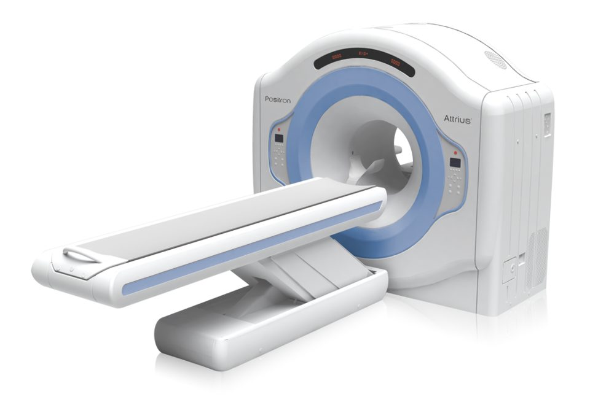

What they are
PET (positron emission tomography) and SPECT (single photon emission computed tomography) are nuclear medicine tests. Unlike CT or MRI, which show the shape of the brain, these tests show how it works: how much glucose it uses, how much blood it receives, or whether certain proteins build up or certain neurotransmitters are missing.
A radiotracer, a molecule attached to a small amount of radioactive substance, is injected into a vein and goes to the target being studied. A camera detects the radiation and reconstructs the image.


The most widely used studies
| Study | What it measures | What it is used for |
|---|---|---|
| FDG-PET | Glucose use | Pattern of dementias; epileptic focus; tumours |
| Amyloid PET | Beta-amyloid plaques | Confirming or ruling out Alzheimer's |
| Tau PET | Tau tangles | Extent of Alzheimer's; research |
| DaTSCAN (SPECT) | Dopamine transporter | Distinguishing Parkinson's from essential tremor |
| Perfusion SPECT | Blood flow | Epileptic focus during a seizure; dementias |
| Cardiac MIBG | Nerve supply of the heart | Supports Lewy body dementia and Parkinson's |
Dementias
FDG-PET shows areas that are working less, with patterns typical of each dementia: in Alzheimer's, the back of the temporal and parietal lobes; in frontotemporal dementia, the frontal and anterior temporal lobes; in Lewy body dementia, the occipital region.
Amyloid PET makes it possible to see during life the plaques that used to be seen only at post-mortem. A negative PET practically rules out Alzheimer's. A positive one is not enough on its own, because many older people without symptoms have amyloid. It is now one of the tests used to select candidates for anti-amyloid antibodies, together with lumbar puncture and, increasingly, blood tests.
Parkinson's and parkinsonism
DaTSCAN measures the nerve endings of the dopamine neurons in the striatum. In Parkinson's and atypical parkinsonism it is reduced (shaped like a "full stop" instead of a "comma"); in essential tremor, drug-induced parkinsonism or psychogenic parkinsonism it is normal. It does not distinguish well between Parkinson's and atypical parkinsonism.
Epilepsy
In drug-resistant epilepsy, FDG-PET between seizures shows the area that is working less, and SPECT during a seizure (injecting the tracer in the first few seconds) shows the area receiving the most blood. They help locate the focus before surgery.
How they are done
- Fasting for a few hours may be needed (FDG-PET), and blood glucose is checked in people with diabetes.
- For DaTSCAN, iodine is taken to protect the thyroid, and some interfering medicines are stopped (some antidepressants and stimulants).
- Between the injection and the scan, 30 minutes to several hours pass. The scan itself takes 15-45 minutes, lying still.
Safety
The radiation dose is low, similar to that of a CT scan, and the tracer is eliminated in the urine within hours. It is worth drinking water and avoiding prolonged close contact with pregnant women and young children for the rest of the day. In pregnancy and breastfeeding they are avoided or precautions are taken.
Sources
- Chételat G, et al. Amyloid-PET and 18F-FDG-PET in the diagnostic investigation of Alzheimer's disease and other dementias. Lancet Neurol. 2020;19:951-62.
- Johnson KA, et al. Appropriate use criteria for amyloid PET. Alzheimers Dement. 2013;9:e1-16.
- Postuma RB, et al. MDS clinical diagnostic criteria for Parkinson's disease. Mov Disord. 2015;30:1591-601.
- Spanish Society of Nuclear Medicine and Molecular Imaging. Patient information.